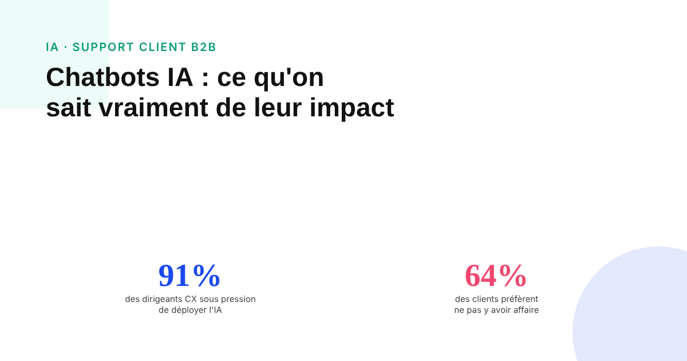
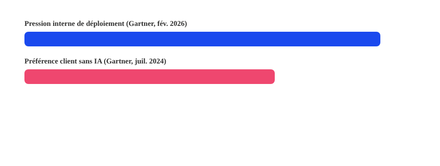

Chatbots IA en support client B2B : ce qu'on sait vraiment sur leur impact
La pression interne pour déployer l'IA en support client n'a jamais été aussi forte. Le sentiment client, lui, raconte une histoire plus nuancée. Entre les deux, il y a surtout un manque de données fiables — et beaucoup de chiffres vendeurs à prendre avec prudence.

Difficile de trouver un sujet marketing où le chiffre vendeur abonde autant que l'efficacité des chatbots IA en support client. Taux de satisfaction comparés au support humain, pourcentage de demandes résolues sans intervention, scores CSAT précis au centième — la plupart de ces chiffres circulent sans source primaire traçable. Ce qui est réellement documenté est plus modeste, mais plus utile.
Deux signaux contradictoires, tous deux documentés
Une enquête Gartner de février 2026, menée auprès de 321 dirigeants de la relation client, rapporte que 91 % d'entre eux subissent une pression de leur direction pour déployer l'IA dans leur service client en 2026. À l'inverse, une enquête Gartner antérieure, de juillet 2024, mesurait que 64 % des clients préféreraient que les entreprises n'utilisent pas l'IA pour leur service client. Les deux chiffres viennent du même institut, à des moments différents : la pression de déploiement s'est intensifiée sans qu'on dispose d'une mesure plus récente du sentiment client pour vérifier s'il a évolué en retour.
Pourquoi la plupart des autres chiffres qui circulent ne tiennent pas
Comparatifs de score de satisfaction entre chatbot et support humain, taux de résolution automatisée à l'unité près, pourcentages précis de bascule du support B2B vers l'IA d'ici telle année : ces chiffres apparaissent sur des blogs d'éditeurs de solutions IA, sans étude primaire identifiable derrière, et se contredisent souvent d'une source à l'autre. Une projection Gartner de mars 2025 évoque une résolution autonome de 80 % des demandes courantes par l'IA agentique à l'horizon 2029 — c'est une prévision explicitement présentée comme telle, pas une mesure déjà constatée.

Ce qui fait vraiment échouer un chatbot IA en B2B
Au-delà des chiffres contestables, trois causes d'échec reviennent de façon qualitative et cohérente dans les retours terrain : l'absence de chemin clair et rapide vers un interlocuteur humain quand le bot atteint sa limite, les boucles de questions répétitives qui tournent en rond sans faire progresser la résolution, et un périmètre de compétence mal calibré — un bot configuré pour du support de premier niveau qui tente de traiter une demande contractuelle ou technique complexe. Ces trois points sont actionnables indépendamment de tout chiffre d'adoption global.
Ce qui compte avant de déployer, plutôt qu'un pourcentage de ROI
Face à l'absence de données fiables et comparables sur l'impact converti, la question la plus utile à se poser avant de déployer un chatbot IA en support B2B n'est pas « quel gain de conversion puis-je en attendre », mais « sur quel périmètre précis ce bot est-il configuré, et à quel moment précis la main est-elle rendue à un humain ». Un périmètre restreint et une escalade fluide protègent davantage la relation client qu'un chiffre de ROI qui, pour l'instant, ne repose sur aucune donnée indépendante solide.
FAQ
Les chatbots IA améliorent-ils vraiment la conversion en support client B2B ?
Les données chiffrées fiables et indépendantes sur ce point précis restent rares. Ce qui est documenté, ce sont des signaux organisationnels contradictoires : une forte pression interne à déployer l'IA, mais une préférence client, mesurée avant cette vague de déploiement, pour ne pas y avoir affaire. L'écart entre les deux reste à surveiller plutôt qu'à trancher sur la base d'un chiffre unique.
Pourquoi un chatbot IA frustre-t-il un client B2B plutôt que de le satisfaire ?
Les causes qualitatives les plus citées sont l'absence de chemin clair vers un humain, les boucles de questions répétitives sans résolution, et un périmètre de compétence mal calibré (le bot tente de traiter un sujet trop complexe ou spécifique pour sa configuration).
Les chatbots IA vont-ils remplacer le support humain en B2B ?
Les projections les plus sérieuses parlent de résolution automatisée pour une partie des demandes courantes à horizon de plusieurs années, pas d'un remplacement total. Les demandes complexes, contractuelles ou à fort enjeu relationnel restent celles où l'escalade vers un humain reste la plus attendue par les clients B2B.
Envie d'intégrer l'IA à votre relation client sans perdre la confiance de vos clients ?
Pour aller plus loin, voir l'article Agents IA marketing : ce qu'on peut vraiment leur confier, et Claude et ChatGPT en growth marketing.
Pour continuer sur ce sujet.